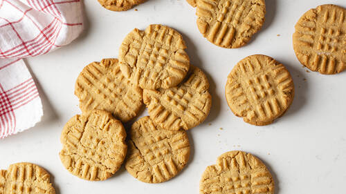

Peanut Butter Cookies
Source: “Soft and Chewy Peanut Butter Cookies” from Mrs. Fields Cookie Book
Yield: 3 ½ dozen cookies
Ingredients
- 2 cups all-purpose flour
- ½ tsp baking soda
- ¼ tsp salt
- 1 ¼ cups dark brown sugar, firmly packed
- 1 ¼ cups white sugar
- 1 cup salted butter, softened
- 3 large eggs
- 1 cup creamy peanut butter
- 2 tsp pure vanilla extract
- 2 cups semisweet chocolate chips (optional)*
Instructions
- Preheat oven to 300F.
- In a medium bowl combine flour, soda and salt. Mix well with a wire whisk. Set aside.*
- In a large bowl blend sugars using an electric mixer set at medium speed. Add butter and mix to form a grainy paste, scraping the sides of the bowl. Add eggs, peanut butter and vanilla, and mix at medium speed until light and fluffy.
- Add the flour mixture and mix at low speed until just mixed. Do not overmix.
- Drop by rounded tablespoons onto an ungreased cookie sheet, 1 ½ inches apart. With a wet fork gently press a crisscross pattern on top of cookies. Bake for 18-22 minutes until cookies are slightly brown along edges. Transfer cookies immediately to cool surface with a spatula.
- *As a variation, add 2 cups coarsely chopped semisweet chocolate bar or 2 cups semisweet chocolate chips to the flour mixture, then bake as directed.